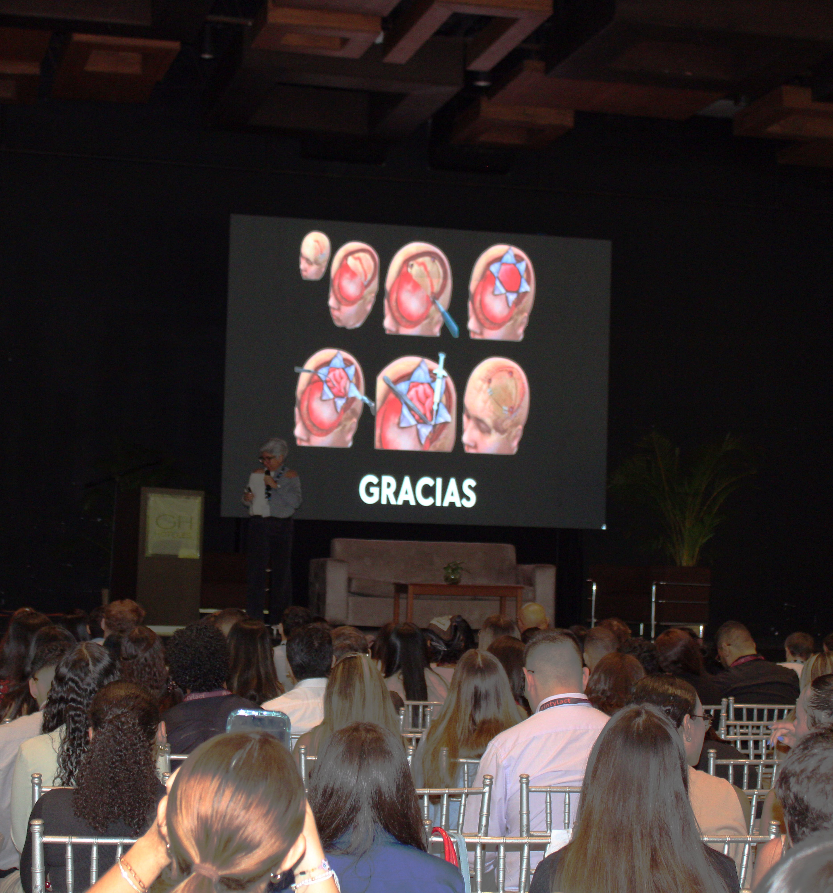

Nuestros Pilares
¿Cómo logramos nuestro impacto?
La solidaridad requiere organización. Levantamos fondos a través de experiencias increíbles que unen a nuestra comunidad.
Eventos Deportivos
Sudamos la camiseta por una buena causa. Nuestros torneos deportivos donde la competencia sana se traduce en recaudación directa para apoyar a nuestros profesores.

Jornadas Académicas
Ciencia e innovación con propósito solidario. Organizamos Congresos Médico-Quirúrgicos y talleres de actualización continua.

Alianzas Estratégicas
Trabajamos de la mano con empresas, marcas médicas y patrocinadores que creen en la educación y desean generar responsabilidad social real.